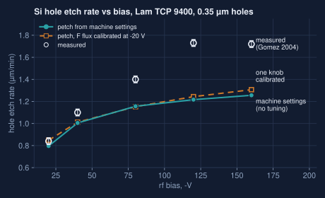
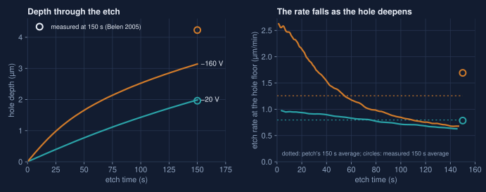
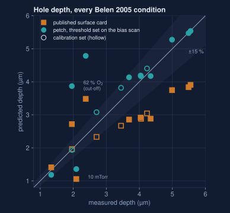
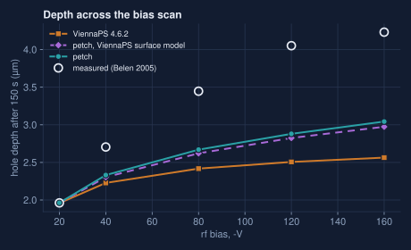
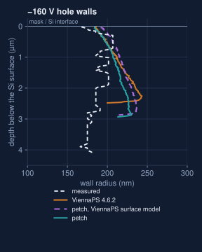
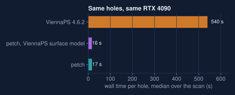
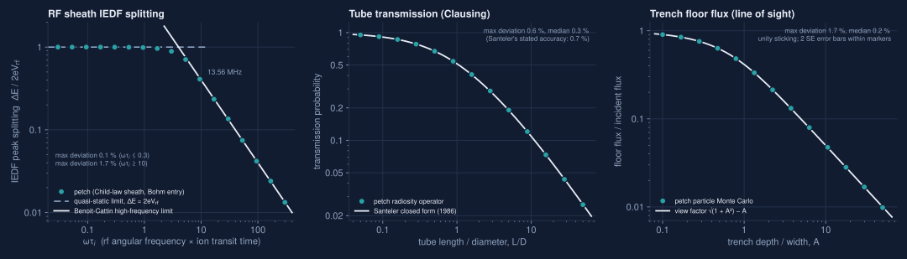
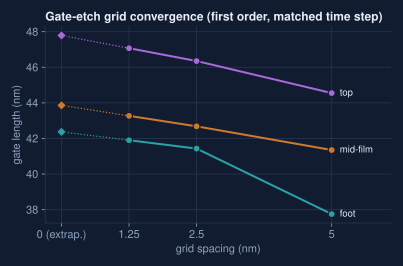
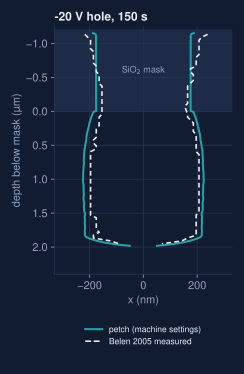

scroll to zoom · drag to pan ·
double-click to toggle · Esc to close
petch starts from a plasma tool's own settings and ends with the etched 3-D profile, on one GPU, in seconds. It runs on real chip layouts, it is scored against measured wafers, and it reproduces textbook physics with its production code.
Pick a bias. The chamber view shows the plasma a Lam TCP 9400 makes at 800 W and 25 mTorr; the numbers on the right are what reactorlab predicts lands on the wafer. Below, the sheath: the thin dark layer where the bias accelerates ions straight down into the features while electrons, much lighter and hotter, are held back except for a brief burst each rf cycle. The ion trajectories and the energy histogram come from petch's sheath model.
Plasma density drawn as the lowest diffusion mode of the chamber, scaled to reactorlab's electron density; particles are illustrative. Sheath: collisionless Child-law model with reactorlab's sheath voltage, electron temperature and ion transit time; the 2 MHz button shows the same plasma with a slower bias, where ions cross in under a cycle and their energies split into two peaks. Not to scale: the sheath is about a thousand times thicker than the features.
Our automated chip-production chain designs a small AI accelerator tile, builds it from real standard cells, and finds the densest patch of polysilicon gates. petch then etches that patch in 3-D and reports, gate by gate, whether the film cleared, how far it recessed, and the etched gate length. Design and process are scored in one loop.
Drag to rotate, scroll to zoom, cut to slice. A 0.6 × 0.6 µm window of the placed layout: 100 nm poly-Si under a 50 nm hard mask, SF6/O2 for 10 s, computed at 1.25 nm (the mesh is thinned to 5 nm for your browser). Colours mark height bands: Si, poly-Si, mask.
16×16 INT4×INT8 multiply-accumulate tile, checked against a golden model (31 cases)
yosys onto the open Nangate45 cell library
real standard-cell GDS, placed in rows
the densest polysilicon patch, clipped from the layout
petch on one GPU, film and mask from the process stack
clearing, recess and gate length per gate
petch reports, gap by gap, that the 100 nm film between the gates is fully removed at this recipe, with no residue at the window edges.
With a 1.5 nm gate oxide added, the poly clears in about 3 s, so the 10 s recipe is about 230 % over-etch. The oxide is exposed at 3.3 s and punched through 0.2–0.5 s later. That recipe cannot be used on that oxide. (The oxide etch law is taken from the literature, not fitted to this tool.)
Wall time at 5, 2.5 and 1.25 nm on a shared, rented RTX 4090: 70–110 s, 6–9 min and 50–150 min. That is cheap enough to screen recipes against a whole layout.
A plasma model (reactorlab, 0-D SF6/O2/Ar) turns the settings of a Lam TCP 9400 — 800 W, 25 mTorr, SF6/O2 40/40 sccm, rf bias −20 to −160 V — into fluorine, oxygen and ion fluxes, ion energies and ion angles. petch takes those and etches 0.35 µm holes through a 1.2 µm oxide mask for 150 s. Nothing is fitted to the holes, and the test was written down and frozen in the repository before the first run.
Each hole is one simulated cell of a square array with mirror walls, shown 3 × 3 and cut in half (press cut to close it). The frames come from a rerun of the scored runs with the same inputs; final depths agree within 3 nm.


The published SF6/O2 surface model (Belen 2005, the one ViennaPS ships) etches deep holes too slowly at high bias. Raising one of its constants, the ion-enhanced etch threshold, from 15 to 25 eV — set on Belen's bias scan alone, by a rule frozen in the repository before the test — lets the model run on fluxes close to the ones Belen measured. Then it predicts the oxygen and pressure scans it never saw.
Ten conditions across two oxygen scans and two pressures, none used to set anything. The published model: 30 %.
Up from 1 of 10. The 0.5 µm holes at 44 and 50 % O2 land within 0.3 %.
The one flux scale the model needs, up from 0.40: with the right threshold, the measured fluxes and the measured holes come within 25 % of each other.

We gave ViennaPS 4.6.2 and petch the same job: Belen's fitted fluxes for five bias settings, the same ion energies and angles, the same 20 nm grid, one flux scale calibrated on the −20 V hole, and the same RTX 4090 (ViennaPS on its OptiX GPU engine). Then we scored all of them against the holes Belen measured.
Median wall time per 150 s hole: 17 s for petch, 540 s for ViennaPS.
Median wall error against the measured profiles over the four uncalibrated biases, petch vs ViennaPS (petch running ViennaPS's own physics: 30 nm). The wall is compared down to 90 % of the shallower hole, so the shallower ViennaPS holes are scored over less wall.
Median depth error (petch / ViennaPS). Both etch too slowly at high bias: the shared surface model is the limit there, not the engine.



Where the answer is known exactly, petch's production code reproduces it: the ion-energy spread of an rf sheath across three decades of frequency, the Clausing transmission of a tube, and the line-of-sight flux reaching the floor of a trench. And the numbers hold when the grid is refined.



A plasma model turns power, pressure, gas flows and bias into the fluxes, ion energies and angles petch etches with, so a recipe can be the input.
GDS windows from a placed design go straight into a 3-D etch, with clearing, recess and gate length reported per gate.
A 150 s hole etch in about 20 s on one RTX 4090; GPU surface meshing 18–55× faster than the CPU path with identical meshes.
Ion fragmentation on reflection, Yamamura–Tawara sputter yields, two-component ion angular distributions, an eroding SiO2 mask, gate-oxide punch-through, e-beam exposure.
Test protocols are written down and frozen in the repository before the first run, and every verdict is published as it falls.
Every frame on this page is the solver's own level set, saved during the run and drawn in your browser.
Known limits. The oxygen cut-off at 62 % O2 and the 10 mTorr hole are not yet reproduced. Wall shapes are about 35 nm off in the median. Sections 03 and 05 run the published surface model; section 04's threshold is set on Belen's bias scan with the fluxes Belen fitted to these holes. His fitted ion flux is about twice the ion current Gomez measured in the same chamber (0.8–0.9 mA/cm2), which reactorlab reproduces to within about 15 %; re-setting the threshold on measured-flux inputs, so the machine-settings chain inherits it, is the next step.
Hole tests: Gomez 2004 and Belen 2005 (same chamber); protocols frozen before the first scored run (GOMEZ-2004-HOLE-PROFILE-V1, BELEN-2005-PROFILES-V1, REACTORLAB-PETCH-GOMEZ-E2E-V1). The machine-settings chain is not independent of Belen's data (reactorlab's calibration used Belen's fluxes). Gate-window results are geometric metrology on the level set for one etch step, with literature chemistry not calibrated to any fab; device-level verdicts are not claimed. The gate-oxide finding rests on transferred SiO2 etch laws. Costs are wall time on a shared, rented RTX 4090 at $0.46/h. Meshes in the 3-D viewers are thinned for the browser; the metrology uses the full-resolution fields.